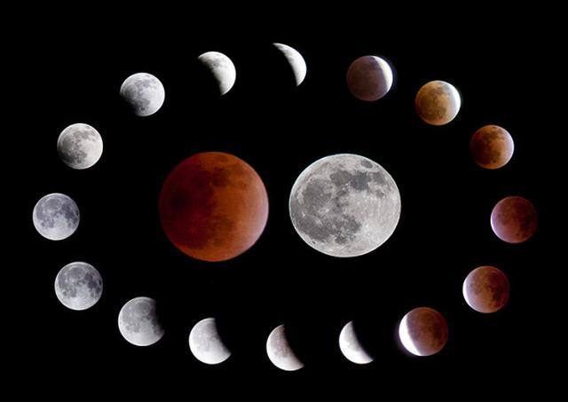
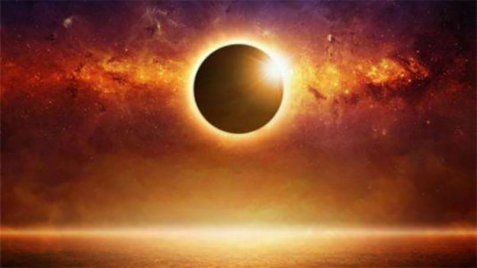

月全食（total lunar eclipse），天文学术语，是月食的一种，当月亮、地球、太阳完全在一条直线上的时候，地球在中间，整个月亮全部走进地球的影子里，月亮表面变成暗红色，形成月全食。
在农历十五、十六，月亮运行到和太阳相对的方向。这时如果地球和月亮的中心大致在同一条直线上，月亮就会进入地球的本影，而产生月全食。月食时，对地球来说，太阳和月球的方向相差180°，由于太阳和月球在天空的轨道，分别称为黄道和白道，并不在同一个平面上，而是约有5°的交角，因此只有太阳和月球分别位于黄道和白道的两个交点附近，有机会形成一条直线，产生月全食。
月全食的过程分为初亏、食既、食甚、生光、复圆五个阶段。
初亏：月球刚接触地球本影，标志月食开始。
食既：月球的西边缘与地球本影的西边缘内切，月球刚好全部进入地球本影内。
食甚：月球的中心与地球本影的中心最近。
生光：月球东边缘与地球本影东边缘相内切，这时全食阶段结束。
复圆：月球的西边缘与地球本影东边缘相外切，这时月食全过程结束。
月球被食的程度叫"食分" ，它等于食甚时月轮边缘深入地球本影最远距离与月球视经之比。

日全食是日食的一种，即在地球上的部分地点太阳光被月亮全部遮住的天文现象。日全食分为初亏、食既、食甚、生光、复原五个阶段。由于月球比地球小，只有在月球本影中的人们才能看到日全食。民间称此现象为天狗食日。
日全食是日食的一种，发生在新月在黄道和白道的交点附近18°左右的范围内。日全食发生时随着月球遮挡住太阳辐射，大气层高处的电离层也会发生一些相应变化。这暂时会对信号需经过电离层反射的无线电中波、短波通信造成一定干扰，使用超短波的调频广播、手机、无线上网等则不受影响。不过，对整个地球磁场而言，这种影响还是微小的。另外，日食造成的降温不会很大。
一次日全食的过程可以分为以下五个时期：初亏、食既、食甚、生光、复圆。
初亏：由于月亮自西向东绕地球运转，所以日食总是在太阳圆面的西边缘开始的。当月亮的东边缘刚接触到太阳圆面的瞬间（即月面的东边缘与日面的西边缘相外切的时刻），称为初亏。初亏也就是日食过程开始的时刻。
食既：从初亏开始，英国天文学家倍利最早描述了这种现象，因此又称为倍利珠。这是由于月球表面有许多崎岖不平的山峰，当阳光照射到月球边缘时，就形成了贝利珠现象。
食甚：食既以后，日轮继续东移，当月轮中心和日面中心相距最近时，就到食甚。食甚是太阳被月亮遮去最多的时刻。
生光：月亮继续往东移动，当月面的西边缘和日面的西边缘相内切的瞬间，称为生光，它是日全食结束的时刻。在生光将发生之前，钻石环、贝利珠的现象又会出现在太阳的西边缘，但也是很快就会消失。接着在太阳西边缘又射出一线刺眼的光芒，原来在日全食时可以看到的色球层、日珥、日冕等现象迅即隐没在阳光之中，星星也消失了，阳光重新普照大地。
复圆：生光之后，月面继续移离日面，太阳被遮蔽的部分逐渐减少，当月面的西边缘与日面的东边缘相切的刹那，称为复圆。这时太阳又呈现出圆盘形状，整个日全食过程就宣告结束了。